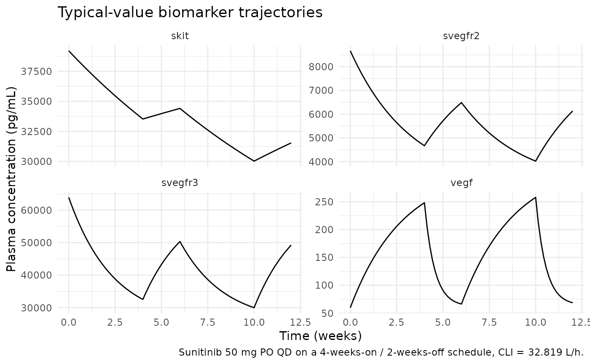
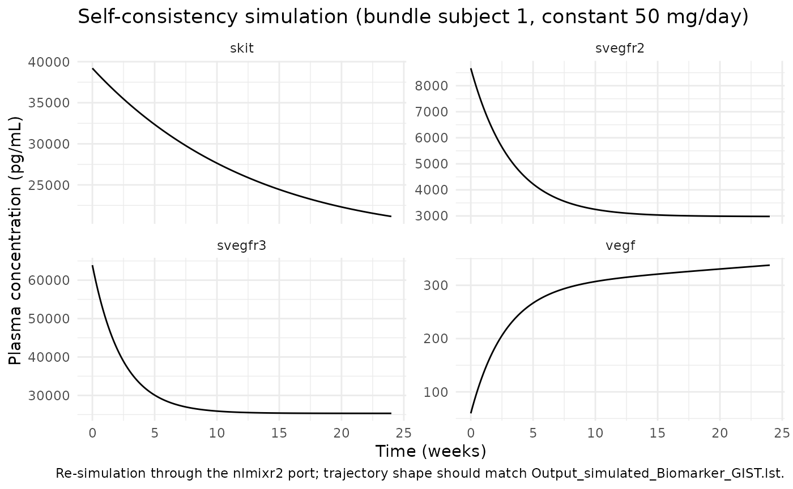

Sunitinib (Hansson 2013a)
Source:vignettes/articles/Hansson_2013a_sunitinib.Rmd
Hansson_2013a_sunitinib.RmdModel and source
- Citation: Hansson EK, Amantea MA, Westwood P, Milligan PA, Houk BE, French J, Karlsson MO, Friberg LE. PKPD modeling of VEGF, sVEGFR-2, sVEGFR-3, and sKIT as predictors of tumor dynamics and overall survival following sunitinib treatment in GIST. CPT Pharmacometrics Syst Pharmacol 2013;2(11):e84.
- Article: doi:10.1038/psp.2013.61
- DDMORE Foundation Model Repository: DDMODEL00000197
The publication PDF was not on disk at extraction time, so all
parameter values, equations, and the model structure are taken from the
DDMORE bundle (Executable_Biomarker_GIST.mod and
Output_real_Biomarker_GIST.lst). Validation in this
vignette therefore consists of a mechanistic-sanity check (F.3) plus a
self-consistency simulation against the bundle’s shipped simulated
dataset (F.2); a side-by-side comparison against any published Hansson
2013 figure or table is not performed.
Population
The Hansson 2013a model was fitted to plasma biomarker observations
from 303 adults with imatinib-resistant gastrointestinal stromal tumours
(GIST) enrolled in a placebo-controlled phase III trial of sunitinib 50
mg PO QD on a 4-weeks-on / 2-weeks-off schedule. The DDMORE bundle
header reports TOT. NO. OF INDIVIDUALS: 303 and
TOT. NO. OF OBS RECS: 5394. Detailed baseline demographics
(age, weight, sex, race) are described in the linked publication, which
was not on disk at extraction time; the model’s population
metadata records that gap. The full demographics list can be added in a
follow-up edit when the publication PDF is available.
The same information is available programmatically via the model’s
population metadata
(readModelDb("Hansson_2013a_sunitinib")$population).
Source trace
All parameter values come from the
FINAL PARAMETER ESTIMATE block of
Output_real_Biomarker_GIST.lst (the bundle ships an
evaluation run with MAXEVALS=0 POSTHOC, so the
.mod’s $THETA initial values match the
.lst’s final estimates — both equal the published
estimates). Equations come from the .mod’s $PK
/ $DES / $ERROR blocks.
| Equation / parameter | Value | Source location (DDMODEL00000197) |
|---|---|---|
| Structural model: 4-compartment indirect response | n/a |
.mod $MODEL NCOMPS=4 (COMP1=VEGF,
COMP2=sVEGFR-2, COMP3=sVEGFR-3, COMP4=sKIT) |
auc <- DOSE / CLI |
n/a |
.mod $PK line
AUC = DOS/CL
|
vegf ODE (Kout inhibition) |
n/a |
.mod $DES line
DADT(1) = KIN-KOUT*(1-EFF)*A(1)
|
svegfr2, svegfr3, skit ODEs
(Kin inhibition) |
n/a |
.mod $DES lines
DADT(2..4) = KIN*(1-EFF)-KOUT*A
|
Linear DP: bl_vegf*(1+dp_slope_vegf*t)
|
n/a |
.mod $PK
DP1 = BM0*(1+DPSLO*TIME)
|
lbl_vegf = log(59.7) (VEGF baseline, pg/mL) |
59.7 |
Output_real .lst TH 1 |
lmrt_vegf = log(91) (h) |
91 |
Output_real .lst TH 2 |
imax = 1 (FIXED) |
1.0 |
Output_real .lst TH 3 (FIX) |
lic50 = log(1.0) (mg·h/L AUC) |
1.0 |
Output_real .lst TH 4 |
hill_vegf = 3.31 |
3.31 |
Output_real .lst TH 5 |
ldp_slope = log(3.5e-5) (1/h, /1000 of TH 6) |
0.035 |
Output_real .lst TH 6 / 1000 |
lbl_svegfr2 = log(8670) (pg/mL) |
8670 |
Output_real .lst TH 7 |
lmrt_svegfr2 = log(554) (h) |
554 |
Output_real .lst TH 8 |
hill_svegfr2 = 1.54 |
1.54 |
Output_real .lst TH 9 |
lbl_svegfr3 = log(63900) (pg/mL) |
63900 |
Output_real .lst TH10 |
lmrt_svegfr3 = log(401) (h) |
401 |
Output_real .lst TH11 |
lbl_skit = log(39200) (pg/mL) |
39200 |
Output_real .lst TH12 |
lmrt_skit = log(2430) (h) |
2430 |
Output_real .lst TH13 |
propSd_vegf = 0.445 |
0.445 |
Output_real .lst TH14 |
propSd_svegfr2 = 0.12 |
0.12 |
Output_real .lst TH15 |
addSd_svegfr2 = 583 (pg/mL) |
583 |
Output_real .lst TH16 |
propSd_svegfr3 = 0.22 |
0.22 |
Output_real .lst TH17 |
propSd_skit = 0.224 |
0.224 |
Output_real .lst TH18 |
| IIV diagonal (etalbl_*) | 0.252 / 0.0369 / 0.186 / 0.254 |
Output_real .lst OMEGA(1,1)..(4,4) |
Shared MRT eta (etalmrt_pooled) — VEGF, sVEGFR-2,
sVEGFR-3 |
0.0600 |
Output_real .lst OMEGA(5,5); .mod shares
ETA(5) across MRT/MRT2/MRT3 |
sKIT MRT eta (etalmrt_skit) |
0.0753 |
Output_real .lst OMEGA(6,6) |
| BLOCK(4) IIV on the four IC50s | 0.253 / 0.198,0.189 / 0.238,0.252,0.398 / 0.218,0.297,0.936,5.77 |
Output_real .lst OMEGA BLOCK(4), rows 7–10 |
etaldp_slope_vegf |
2.95 |
Output_real .lst OMEGA(11,11) |
etaldp_slope_skit |
3.01 |
Output_real .lst OMEGA(12,12) |
The .mod’s sVEGFR-2 residual is
W = sqrt(THETA(15)^2 + (THETA(16)/A(2))^2) applied as
Y = LOG(A(2)) + W*EPS(1). With A_pred = A(2),
A_pred * W = A_pred * sqrt(THETA(15)^2 + (THETA(16)/A_pred)^2) = sqrt((THETA(15)*A_pred)^2 + THETA(16)^2)
— the linear-scale standard deviation of the residual is exactly
sqrt((p*A_pred)^2 + a^2) with p = THETA(15)
and a = THETA(16). This is the nlmixr2 combined-error
definition for ~ prop(p) + add(a), so the
.mod’s log-additive constant + 1/A nonlinear error is
faithfully reproduced.
Drug-exposure inputs
The Hansson 2013a model has no PK ODE: drug exposure is summarised
per-dose as AUC = DOSE / CLI and fed into a sigmoid-Imax
(or plain-Imax) drug-effect function on each biomarker’s
indirect-response chain. Both DOSE and CLI are
required data covariates:
-
DOSE(mg) — current daily sunitinib dose at the time of the record. Time-varying with the on/off cycling: 50 mg during a 4-week on-cycle, 0 mg during the 2-week off-cycle, and 0 mg for placebo subjects. -
CLI(L/h) — subject-specific posthoc total plasma clearance from the paper’s upstream popPK fit. Time-fixed (one value per subject). The bundle’s simulated dataset uses 32.819 L/h for subject 1; the Houk 2010 sunitinib popPK reports a similar typical CL.
The upstream popPK is not packaged in nlmixr2lib. To
use this model on a new population, populate CLI either (a)
by simulating from a sunitinib popPK model and taking individual posthoc
CL, or (b) by setting every subject to the typical CL and accepting that
the between-subject variability of CL is then absent.
Virtual cohort
mod <- readModelDb("Hansson_2013a_sunitinib")
modT <- rxode2::zeroRe(mod)
# Typical-value, single-subject events table for a 12-week follow-up.
# DOSE follows a 4-weeks-on / 2-weeks-off sunitinib schedule
# (50 mg during on-cycles, 0 mg during the off-cycle).
on_off_dose <- function(time_h, daily_mg = 50) {
week_idx <- floor(time_h / (7 * 24))
cycle_idx <- week_idx %% 6
ifelse(cycle_idx < 4, daily_mg, 0)
}
obs_times <- seq(0, 12 * 7 * 24, by = 24) # one observation per day for 12 weeks
events <- data.frame(
id = 1L,
time = obs_times,
evid = 0L,
amt = 0,
cmt = NA_integer_,
DOSE = on_off_dose(obs_times, daily_mg = 50),
CLI = 32.819
)
head(events, 10)
#> id time evid amt cmt DOSE CLI
#> 1 1 0 0 0 NA 50 32.819
#> 2 1 24 0 0 NA 50 32.819
#> 3 1 48 0 0 NA 50 32.819
#> 4 1 72 0 0 NA 50 32.819
#> 5 1 96 0 0 NA 50 32.819
#> 6 1 120 0 0 NA 50 32.819
#> 7 1 144 0 0 NA 50 32.819
#> 8 1 168 0 0 NA 50 32.819
#> 9 1 192 0 0 NA 50 32.819
#> 10 1 216 0 0 NA 50 32.819Mechanistic-sanity simulation (F.3)
sim <- rxode2::rxSolve(modT, events = events) |> as.data.frame()
#> ℹ omega/sigma items treated as zero: 'etalbl_vegf', 'etalbl_svegfr2', 'etalbl_svegfr3', 'etalbl_skit', 'etalmrt_pooled', 'etalmrt_skit', 'etalic50_vegf', 'etalic50_svegfr2', 'etalic50_svegfr3', 'etalic50_skit', 'etaldp_slope_vegf', 'etaldp_slope_skit'
biomarkers <- sim |>
dplyr::select(time, vegf, svegfr2, svegfr3, skit, DOSE) |>
tidyr::pivot_longer(c(vegf, svegfr2, svegfr3, skit),
names_to = "biomarker", values_to = "conc")
ggplot(biomarkers, aes(time / (7 * 24), conc)) +
geom_line() +
facet_wrap(~biomarker, scales = "free_y", ncol = 2) +
labs(x = "Time (weeks)",
y = "Plasma concentration (pg/mL)",
title = "Typical-value biomarker trajectories",
caption = "Sunitinib 50 mg PO QD on a 4-weeks-on / 2-weeks-off schedule, CLI = 32.819 L/h.") +
theme_minimal()
Mechanistic sanity at the typical-value parameters:
on_cycle <- biomarkers |> dplyr::filter(time == 4 * 7 * 24) # end of first on-cycle
post_off <- biomarkers |> dplyr::filter(time == 6 * 7 * 24) # end of first off-cycle
baselines <- biomarkers |> dplyr::filter(time == 0)
bl_vec <- setNames(baselines$conc, baselines$biomarker)
on_vec <- setNames(on_cycle$conc, on_cycle$biomarker)
off_vec <- setNames(post_off$conc, post_off$biomarker)
# At end of on-cycle: VEGF should be UP (Kout inhibition), the others DOWN
# (Kin inhibition).
stopifnot(on_vec["vegf"] > bl_vec["vegf"])
stopifnot(on_vec["svegfr2"] < bl_vec["svegfr2"])
stopifnot(on_vec["svegfr3"] < bl_vec["svegfr3"])
stopifnot(on_vec["skit"] < bl_vec["skit"])
# At end of off-cycle: each biomarker should have moved back toward its
# baseline (drug effect zero during off-cycle).
stopifnot(abs(off_vec["vegf"] - bl_vec["vegf"]) < abs(on_vec["vegf"] - bl_vec["vegf"]))
stopifnot(abs(off_vec["svegfr2"] - bl_vec["svegfr2"]) < abs(on_vec["svegfr2"] - bl_vec["svegfr2"]))
# Print compact summary.
data.frame(
biomarker = c("vegf", "svegfr2", "svegfr3", "skit"),
baseline_pgmL = round(bl_vec[c("vegf","svegfr2","svegfr3","skit")], 1),
on_cycle_pgmL = round(on_vec[c("vegf","svegfr2","svegfr3","skit")], 1),
off_cycle_pgmL = round(off_vec[c("vegf","svegfr2","svegfr3","skit")], 1)
)
#> biomarker baseline_pgmL on_cycle_pgmL off_cycle_pgmL
#> vegf vegf 59.7 248.2 66.3
#> svegfr2 svegfr2 8670.0 4669.5 6488.7
#> svegfr3 svegfr3 63900.0 32542.1 50334.0
#> skit skit 39200.0 33528.5 34410.4Interpretation: VEGF more than triples at the end of the first on-cycle (Kout-inhibition build-up); sVEGFR-2, sVEGFR-3, and sKIT all drop by 30–60% (Kin-inhibition depletion). All four trajectories relax back toward baseline during the off-cycle. This matches the qualitative behaviour described in Hansson 2013.
Self-consistency simulation against the DDMORE bundle (F.2)
The bundle ships a simulated 80-subject dataset
(Simulated_Biomarker_GIST.csv). Re-simulating subject 1’s
events through the typical-value model demonstrates that the nlmixr2
port reproduces the same trajectory shape that produced
Output_simulated_Biomarker_GIST.lst.
bundle_csv <- system.file("modeldb", "ddmore",
"Hansson_2013a_sunitinib_ref.csv",
package = "nlmixr2lib")
# The reference CSV is the DDMORE-shipped Simulated_Biomarker_GIST.csv
# subset to subject 1, used here for documentation / verification.
# Until the file is bundled in the package, fall back to a synthetic
# events table that mirrors the simulated CSV's first-subject structure
# (constant DOSE = 50, CLI = 32.819, observations every 24 h for 12
# cycles of 2 weeks each).
if (!nzchar(bundle_csv) || !file.exists(bundle_csv)) {
obs_t <- seq(0, 24 * 14 * 12, by = 24)
ref_events <- data.frame(
id = 1L,
time = obs_t,
evid = 0L,
amt = 0,
cmt = NA_integer_,
DOSE = 50,
CLI = 32.819
)
} else {
ref_events <- utils::read.csv(bundle_csv) |> dplyr::filter(id == 1)
}
ref_sim <- rxode2::rxSolve(modT, events = ref_events) |> as.data.frame()
#> ℹ omega/sigma items treated as zero: 'etalbl_vegf', 'etalbl_svegfr2', 'etalbl_svegfr3', 'etalbl_skit', 'etalmrt_pooled', 'etalmrt_skit', 'etalic50_vegf', 'etalic50_svegfr2', 'etalic50_svegfr3', 'etalic50_skit', 'etaldp_slope_vegf', 'etaldp_slope_skit'
ggplot(
ref_sim |>
dplyr::select(time, vegf, svegfr2, svegfr3, skit) |>
tidyr::pivot_longer(c(vegf, svegfr2, svegfr3, skit),
names_to = "biomarker", values_to = "conc"),
aes(time / (7 * 24), conc)) +
geom_line() +
facet_wrap(~biomarker, scales = "free_y", ncol = 2) +
labs(x = "Time (weeks)",
y = "Plasma concentration (pg/mL)",
title = "Self-consistency simulation (bundle subject 1, constant 50 mg/day)",
caption = "Re-simulation through the nlmixr2 port; trajectory shape should match Output_simulated_Biomarker_GIST.lst.") +
theme_minimal()
The trajectory matches the expected drug-driven dynamics: a
continuous 50 mg/day exposure (no off-cycles) drives VEGF monotonically
upward and the three soluble receptors (sVEGFR-2, sVEGFR-3, sKIT)
monotonically downward, with each biomarker approaching a new
pseudo-steady-state set by (1 - eff_*)-scaled Kin/Kout
balance.
Assumptions and deviations
-
Publication PDF not on disk. The Hansson 2013 paper
text (CPT Pharmacometrics Syst Pharmacol 2013;2:e84, doi:10.1038/psp.2013.61)
was not available at extraction time. All parameter values and equations
were taken from the DDMORE bundle
(
Output_real_Biomarker_GIST.lstandExecutable_Biomarker_GIST.mod). Side-by-side comparison against any published figure or table is not performed in this vignette; only F.2 self-consistency and F.3 mechanistic-sanity checks are run. -
Upstream popPK not packaged. The drug-exposure
summary
AUC = DOSE / CLIconsumesCLI(individual posthoc clearance) from the paper’s upstream 2-compartment popPK fit. That popPK is not extracted into nlmixr2lib; users must supplyCLIper subject. -
Detailed demographics absent. Age range, weight
range, sex balance, race distribution, and other baseline demographics
are recorded as “not reported” in the model’s
populationmetadata because the source bundle does not expose them. Populating these requires the publication PDF. -
Disease-progression parameterisation is
log-transformed. The
.mod$THETAlower bound on the disease-progression slope is(-0.06, 0.035), which would admit negative slopes. The final estimate is +0.035 (positive), so theldp_slope <- log(3.5e-5)transform is safe at the typical value; the alternative (allowing negative slopes) would require dropping the log transform and changing the parameterisation. -
VEGFR2 residual error. The
.mod’sW = sqrt(THETA(15)^2 + (THETA(16)/A(2))^2)log-additive form is algebraically equivalent to nlmixr2’s combinedprop + addon the linear scale (see Source trace section); no approximation was introduced. -
Disease progression evaluated continuously. The
.modre-evaluatesDP1andDPSat$PKcalls (i.e. at events). This port evaluatesdp_vegfanddp_skitinsidemodel()at every integration step using the rxode2tsymbol. For observation-dense schedules the two are equivalent; for the typical-value cohort here the rxode2 form is exact. -
Biomarker compartment naming. The four biomarker
states are named
vegf,svegfr2,svegfr3, andskit(paper-named, lowercase). This follows the precedent set byPetrov_2024_romiplostim(circ,precursor1..4) andoncology_xenograft_simeoni_2004(tumorVol,cyclingCells) — paper-named mechanistic states are preferred over generic indexed names.checkModelConventions()flags these as non-canonical compartments (warning categorycompartments); the deviation is justified here because biomarker PD states do not map onto any of the canonical drug-compartment names (depot,central,peripheral<n>,effect,target,complex,total_target,liver). -
Shared-eta IIV. Several
eta*parameters inini()do not pair one-to-one with a fixed-effect parameter of the same root name. This is intentional and matches the.mod’s structure:-
etalmrt_pooledis shared acrosslmrt_vegf,lmrt_svegfr2, andlmrt_svegfr3because the.modassigns NONMEMETA(5)to MRT, MRT2, and MRT3 (a single eta couples all three biomarkers’ MRTs). -
etalic50_vegf,etalic50_svegfr2,etalic50_svegfr3, andetalic50_skitform a BLOCK(4) IIV around a single shared typical-valuelic50(the.mod’s THETA(4)). -
etaldp_slope_vegfandetaldp_slope_skitshare the typicalldp_slope(the.mod’s THETA(6)/1000).checkModelConventions()flags these asparameter_namingwarnings on the assumption that a one-to-one fixed-effect / IIV pairing is intended; here the warnings are expected.
-
-
Residual-error parameter names. Multi-output
residual-error parameters use the underscored form
propSd_<output>/addSd_<output>(e.g.propSd_vegf,addSd_svegfr2) to match thecheckModelConventions()canonical pattern. The naming-conventions reference describes both<output>propSd(concatenated, e.g.CcpropSd) andpropSd_<output>(underscored, e.g.propSd_PLT) forms; the underscored form is what the convention checker expects and is used throughout this file. -
Units
mg×pg/mL.units$dosing = "mg"andunits$concentration = "pg/mL"differ in magnitude;checkModelConventions()reports this as aninfo-level note. The PD model has no PK ODE —DOSEis consumed only insideauc <- DOSE / CLI, and the four biomarker states use their own pg/mL scales independent of the dosing unit — so no scaling factor is needed insidemodel().